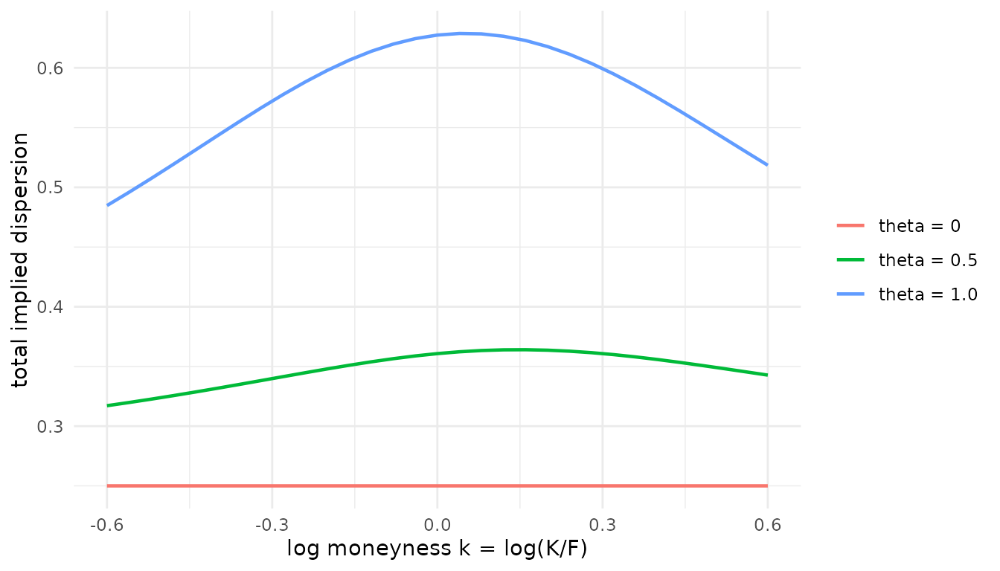
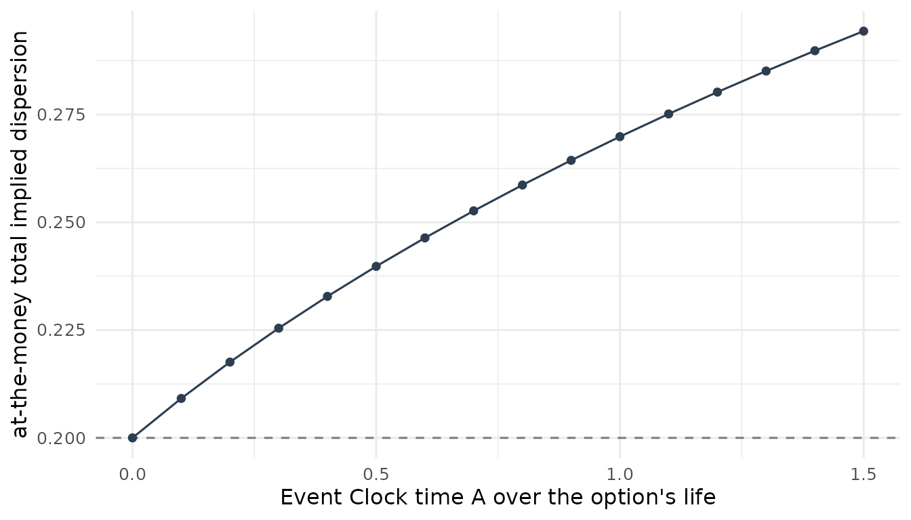

Event-spanning options: estimating an asset's exposure to an event
Source:vignettes/eventclock-event-spanning.Rmd
eventclock-event-spanning.RmdHow much does an asset care about an event?
Scheduled binary events — elections, referendums, central-bank or
court decisions, merger votes, drug approvals — move asset prices
through a simple question: how much would this asset be worth under
outcome 1 (the event happens) and how much under outcome 2 (it does
not)? Write \(\eta_1\) and \(\eta_2\) for those two values as multiples
of today’s value. (In the transition law of
vignette("eventclock-brexit"), outcome 1 is \(J = 1\) and outcome 2 is \(J = 0\).) This vignette measures their
ratio from option prices, on a log scale: \[
\theta \;=\; \log\!\big(\eta_1 / \eta_2\big).
\] We call \(\theta\) the
log exposure. A stock worth 10% more under outcome 1
than under outcome 2 has \(\theta \approx
0.10\); an index that barely cares has \(\theta \approx 0\). The sign says
which outcome the asset favors, the magnitude how much
is at stake. (vignette("eventclock-event-betas") estimates
the exposure from stock returns as the difference \(\Delta\eta = \eta_1 - \eta_2\); the two
measures are linked exactly by \(\Delta\eta =
(e^\theta - 1)/(q e^\theta + 1 - q)\).)
The key idea is which options to use. An option that expires after the event is exposed to the outcome itself: its price mixes the asset’s two possible distributions, and that mixture is what identifies \(\theta\). An option that expires before the event never sees the outcome; it is exposed only to learning — revisions in the event probability while it is alive. Estimating \(\theta\) from options that span the event only, and leaving the shorter options out, keeps the shorter options available as a genuine out-of-sample test of the learning channel (the “held-out” test below).
What you need. One long table of option smiles for expiries after the event date, one row per smile point, with columns:
-
surface— an identifier of the smile (valuation date × expiry); -
k— log moneyness \(\log(K/F)\), strike over forward (or a delta grid, converted withec_delta_to_k(), see below); -
iv— the implied volatility: annualized if you also supplytau, the time to expiry in years; withouttauit is read as total dispersion, volatility × \(\sqrt{\tau}\); -
q— the event probability on the valuation date (e.g. from Polymarket viapm_prices(), orq_from_price()); - optionally
w— a weight per point (for instance the number of quotes behind it), andiv_bid,iv_ask— the quotes’ bid and ask implied volatilities.
Five or more points per smile are enough. No proprietary option data ships with the package; the examples below are simulated. A realistic simulated panel looks like this:
data(us2016_surfaces_sim)
head(us2016_surfaces_sim, 4)
#> # A tibble: 4 × 6
#> event_date obs_date expiry_date node iv q
#> <date> <date> <date> <dbl> <dbl> <dbl>
#> 1 2016-11-08 2016-10-11 2016-11-18 0.1 0.110 0.164
#> 2 2016-11-08 2016-10-11 2016-11-18 0.2 0.113 0.164
#> 3 2016-11-08 2016-10-11 2016-11-18 0.3 0.117 0.164
#> 4 2016-11-08 2016-10-11 2016-11-18 0.4 0.116 0.164The model: a mixture of two outcomes
Divide the asset’s value at expiry by today’s forward price. If outcome 1 happens (probability \(q\)), that ratio is lognormal with mean \(\eta_1\) and total dispersion \(s_1\) — the standard deviation of the log return over the option’s remaining life, i.e. annualized volatility times \(\sqrt{\tau}\). If outcome 2 happens, it is lognormal with mean \(\eta_2\) and dispersion \(s_2\). Averaged over the two outcomes the asset must be worth its forward, \(q\eta_1 + (1-q)\eta_2 = 1\), so \((q, \theta, s_1, s_2)\) describe the mixture completely.
ec_mix_price() prices European calls and puts under this
mixture, per unit of forward and without discounting;
ec_mix_iv() turns the prices into implied volatilities in
total-dispersion units (divide by \(\sqrt{\tau}\) for the usual annualized
number):
k <- seq(-0.6, 0.6, by = 0.04)
smile <- function(theta) ec_mix_iv(k, q = 0.35, theta = theta,
s1 = 0.25, s2 = 0.25)
dat <- data.frame(
k = rep(k, 3),
iv = c(smile(0), smile(0.5), smile(1.0)),
theta = factor(rep(c("theta = 0", "theta = 0.5", "theta = 1.0"),
each = length(k)))
)
ggplot(dat, aes(k, iv, colour = theta)) +
geom_line(linewidth = 0.8) +
labs(x = "log moneyness k = log(K/F)", y = "total implied dispersion",
colour = NULL) +
theme_minimal()
With \(\theta = 0\) the two outcomes look alike and the smile is flat. A nonzero exposure spreads the two outcomes apart: the smile rises and, unless \(q = 1/2\), tilts to one side. That shape is what the estimation uses. A useful identity: when \(s_1 = s_2\), the event adds exactly \(q(1-q)\,\theta^2\) to the variance of the log return — the basis of the quick estimator further below.
Delta grids
Standardized option surfaces are usually delivered on a delta grid
instead of strikes: a call delta of 0.1 is a far out-of-the-money call,
0.5 roughly at the money, 0.9 deep in the money (equivalently, a far
out-of-the-money put). ec_delta_to_k() maps each node into
log moneyness using that node’s own total dispersion — no forward
reconstruction needed. It assumes the undiscounted forward delta \(N(d_1)\) of the Black model; vendor spot or
discounted deltas differ slightly.
iv <- c(0.32, 0.29, 0.27, 0.26, 0.27) # annualized, 30 days to expiry
tau <- 30 / 365
node <- c(0.1, 0.3, 0.5, 0.7, 0.9) # call deltas
ec_delta_to_k(node, s = iv * sqrt(tau)) # s = total dispersion
#> [1] 0.12177923 0.04705504 0.00299589 -0.03631057 -0.09620465Put deltas enter as call-equivalent deltas, \(1 + \delta_{put}\), so a standard out-of-the-money composite smile (calls below 0.5, puts above) becomes one grid.
Estimating one log exposure from many smiles
ec_theta_fit() gives every smile its own dispersions
\(s_1, s_2\) but asks all smiles to
share one exposure \(\theta\); each smile counts equally,
however many points it has. Here we simulate three clean smiles with a
known \(\theta = 0.8\) and recover
it:
k7 <- seq(-0.5, 0.5, length.out = 7)
cfg <- data.frame(
surface = c("oct25_nov15", "oct28_nov15", "nov01_nov22"),
q = c(0.40, 0.45, 0.42),
s1 = c(0.28, 0.27, 0.30),
s2 = c(0.35, 0.33, 0.38)
)
panel <- do.call(rbind, lapply(seq_len(nrow(cfg)), function(i) {
data.frame(
surface = cfg$surface[i], k = k7, q = cfg$q[i],
iv = ec_mix_iv(k7, cfg$q[i], theta = 0.8,
s1 = cfg$s1[i], s2 = cfg$s2[i])
)
}))
fit <- ec_theta_fit(panel)
fit
#> -- Event-spanning mixture fit (3 surfaces, 21 nodes)
#> Common log exposure theta = 0.8000 (conditional-mean ratio eta1/eta2 = 2.226)
#> Surface-balanced RMSE = 0.0000 (IV units of the input)
fit$surfaces
#> # A tibble: 3 × 7
#> surface q n theta s1 s2 rmse
#> <chr> <dbl> <int> <dbl> <dbl> <dbl> <dbl>
#> 1 oct25_nov15 0.4 7 0.800 0.280 0.350 0.00000176
#> 2 oct28_nov15 0.45 7 0.800 0.270 0.330 0.00000248
#> 3 nov01_nov22 0.42 7 0.800 0.300 0.380 0.00000156The per-smile table shows the fitted dispersions and fit quality.
With a tau column, iv is read as annualized;
fit$nodes holds the fitted value of every point, and with
iv_bid/iv_ask columns
fit$inside_share reports how many fitted values fall inside
the quotes. boot_reps together with block —
the name of a column holding the valuation date,
e.g. boot_reps = 200, block = "obs_date" for
us2016_surfaces_sim (keep that column in the data you pass)
— adds a bootstrap confidence interval that resamples whole valuation
dates.
Is one exposure enough? common = FALSE
lets every smile choose its own \(\theta\); if those estimates scatter around
the common one, the restriction is supported. Which outcome does
the asset favor? At \(q =
1/2\) the mixture is symmetric — swapping the outcomes (and their
dispersions) gives the same prices — so options alone cannot tell the
sign. When \(q\) is close to one half,
take the sign from returns (event_beta()).
A realistic example: the S&P 500 and the 2016 U.S. election
us2016_surfaces_sim holds 47 simulated smiles (valuation
dates over the last four weeks before the 2016 U.S. presidential
election, three expiries after it, nine delta nodes each) that match the
profile of S&P 500 index options at the time. They were generated
from the mixture model, with parameters estimated on index options as
calibration targets, so the numbers are realistic but synthetic. Outcome
1 is a Trump win; q is the betting-market probability of it
(between 0.15 and 0.29).
s16 <- us2016_surfaces_sim
s16$tau <- as.numeric(s16$expiry_date - s16$obs_date) / 365
s16$k <- ec_delta_to_k(s16$node, s16$iv * sqrt(s16$tau))
s16$surface <- paste(s16$obs_date, s16$expiry_date)
fit16 <- ec_theta_fit(s16[, c("surface", "k", "iv", "q", "tau")])
fit16
#> -- Event-spanning mixture fit (47 surfaces, 423 nodes)
#> Common log exposure theta = -0.0781 (conditional-mean ratio eta1/eta2 = 0.925)
#> Surface-balanced RMSE = 0.0035 (IV units of the input)The common log exposure is \(\theta \approx\) -0.078: conditional on a Trump win, the index was priced about 7.5% lower than conditional on a Clinton win. How precise is that? Letting each smile choose its own exposure shows how tightly the 47 smiles agree:
free16 <- ec_theta_fit(s16[, c("surface", "k", "iv", "q", "tau")],
common = FALSE)
summary(free16$surfaces$theta)
#> Min. 1st Qu. Median Mean 3rd Qu. Max.
#> -0.09030 -0.07965 -0.07775 -0.07781 -0.07649 -0.06665With \(q\) far from one half, the sign is identified from the smiles’ tilt, and it agrees with how index futures actually moved on election night. The fitted dispersions add a second finding:
summary(fit16$surfaces$s1 - fit16$surfaces$s2)
#> Min. 1st Qu. Median Mean 3rd Qu. Max.
#> -0.01021 0.01320 0.01919 0.02216 0.02921 0.05632\(s_1 > s_2\) almost everywhere: options priced more volatility after a Trump win than after a Clinton win.
The quick estimator: the variance hump
Many pipelines already compute a maturity hump — how much
higher the implied volatility of the expiry that spans the event is than
its neighbors’. Expressed in total variance (annualized
variance times \(\tau\)), not in
annualized volatility, the hump is the event’s contribution \(q(1-q)\,\theta^2\), and
ec_theta_hump() inverts it. The no-event baseline at the
same maturity can be interpolated from the total variances of the
neighboring expiries that do not span the event:
tau_b <- 35 / 365
iv_spanning <- 0.21 # expiry spanning the event, at the money, annualized
iv_baseline <- 0.15 # no-event baseline at the same maturity
dvar <- (iv_spanning^2 - iv_baseline^2) * tau_b
ec_theta_hump(dvar, q = 0.4)
#> [1] 0.09289853A hump of six volatility points over five weeks corresponds to \(|\theta| \approx\) 0.09: the asset is worth about 9–10% more under one outcome than under the other. No optimization and no smile wings are needed, which makes this the natural first pass over a large cross-section; it gives the size of \(\theta\) only, and the sign again comes from returns.
Pricing options that expire before the event
With \(\theta\) in hand, the next
question is what it implies for the options that were not used
in the estimation: those expiring before the event. While such an option
is alive, the event probability keeps moving with the news, and the
asset moves with it. ec_mix_price_pre() and
ec_mix_iv_pre() price this exactly under the package’s
model of how the probability evolves
(ec_transition_density()). Their inputs: A,
the Event Clock time expected over the option’s remaining life (for
instance from event_clock_forecast()), and
s_cf, the asset’s ordinary total dispersion without the
event (“cf” for counterfactual):
pre <- data.frame(A = seq(0, 1.5, by = 0.1))
pre$iv <- ec_mix_iv_pre(0, q = 0.45, theta = 0.8, A = pre$A, s_cf = 0.20)
ggplot(pre, aes(A, iv)) +
geom_hline(yintercept = 0.20, linetype = 2, color = "grey50") +
geom_line(color = "#2c3e50") + geom_point(color = "#2c3e50") +
labs(x = "Event Clock time A over the option's life",
y = "at-the-money total implied dispersion") +
theme_minimal(base_size = 12)
A = 0 is the no-learning benchmark
(dashed line): if no news arrives before expiry, the option is priced
off ordinary risk alone. The more news is expected, the more the option
is worth.
The held-out test, step by step
Do options expiring before the event actually carry the learning value that \(\theta\), \(q\), and the clock imply? Compare their observed smile with two predictions — no learning (\(A = 0\)) and learning with a forecast clock — and see which prices them better. A simulated example with a known truth (\(\theta = 1\), \(q = 0.55\), a one-week option, true clock 0.15 over its life):
set.seed(3)
k_pre <- seq(-0.3, 0.3, by = 0.1)
tau_pre <- 7 / 365
s_cf <- 0.9 * sqrt(tau_pre) # ordinary volatility 90%, one week
iv_obs <- ec_mix_iv_pre(k_pre, q = 0.55, theta = 1, A = 0.15, s_cf = s_cf) /
sqrt(tau_pre) + rnorm(length(k_pre), sd = 0.01) # observed, annualized
A_fc <- 0.12 # real-time forecast of the clock
A_low <- ec_recovery_set(A_fc, delta = 0.5)$lower # conservative low end
pred <- function(A) {
ec_mix_iv_pre(k_pre, q = 0.55, theta = 1, A = A, s_cf = s_cf) /
sqrt(tau_pre)
}
rmse <- function(A) sqrt(mean((pred(A) - iv_obs)^2))
data.frame(
prediction = c("no learning (A = 0)", "forecast clock",
"conservative low end"),
A = c(0, A_fc, A_low),
rmse_iv_points = 100 * c(rmse(0), rmse(A_fc), rmse(A_low))
)
#> prediction A rmse_iv_points
#> 1 no learning (A = 0) 0.00 18.130976
#> 2 forecast clock 0.12 3.109574
#> 3 conservative low end 0.03 14.092634With the forecast clock, the pricing error falls from 18 to 3 volatility points; even the conservative low end of the clock improves on no learning, if by less (14 points). On real data, three choices keep the test honest, and all three avoid looking at the options being tested:
-
The clock is forecast, not measured after the fact
— with
event_clock_forecast()and a rule picked byec_forecast_select()on earlier option lives (vignette("eventclock-measurement")). -
The ordinary smile
s_cfcomes from “quiet” weeks: earlier options whose own lives saw almost no movement in the event probability (a tiny clock) show the smile without event learning. How tiny is a judgment call; the next section shows how to make it without looking at the tested options. Smiles from after the event are a poor substitute — they already know the outcome. - The exposure is estimated with data available on the valuation date only.
In the authors’ application — options on Trump Media expiring the Friday before the 2024 election — adding learning lowers the root-mean-square pricing error of the held-out calls by about 4.6% relative to no learning, and still by 1.2% at the conservative low end, while the puts do not improve. (The simulation above uses the true \(\theta\), \(q\), and ordinary smile, so its much larger gain is an upper bound for what real data can show.) A one-sided result like this is informative in itself: it points to frictions (a hard-to-borrow stock with American-style options) rather than to a failure of the probability input.
Choosing the ordinary smile without peeking
Point 2 hides a temptation: there are many reasonable ways to build an “ordinary” smile from quiet weeks (how quiet is quiet? use all of them or only the most similar?), and trying them out on the options being tested would quietly bias the test. The package therefore separates the choice from the test:
-
ec_quiet_library()lists the earlier option smiles, each with its at-the-money volatility, its shape (how far each strike’s volatility sits above or below at-the-money), and its quietness — the clock realized while that option was alive. -
ec_quiet_rules()fixes a menu of construction rules in advance — by default 15: three quietness cut-offs (the 25th, 50th, or 75th percentile of the earlier clocks) times five ways of averaging (all quiet smiles, the 5 or 10 most recent, or the 5 or 10 whose at-the-money volatility is closest to the target’s). -
ec_quiet_select()tries every rule on earlier quiet weeks treated as if they were the target (“pseudo-targets”), using only smiles that had already expired at that time, and keeps the rule that predicts their wings best. The real target’s wings are never consulted; its at-the-money quote only sets the level.
A simulated example with 30 weekly options: every week has the same ordinary smile, plus an event-driven skew that grows with how much news arrived during that week.
set.seed(11)
n <- 30
weeks <- data.frame(
surface = sprintf("week %02d", 1:n),
date = as.Date("2024-05-06") + 7 * (0:(n - 1)), # Monday quotes
A = rexp(n, rate = 1 / 0.05), # clock over each life
atm = 0.75 + 0.10 * runif(n)
)
nodes <- merge(weeks, data.frame(k = round(seq(-0.3, 0.3, by = 0.05), 10)))
nodes$expiry <- nodes$date + 4 # Friday expiry
nodes$iv <- nodes$atm + 0.8 * nodes$k^2 - # ordinary smile
3 * nodes$A * nodes$k + # event-driven skew
rnorm(nrow(nodes), sd = 0.005)
lib <- ec_quiet_library(nodes)
lib
#> <ec_quiet_library> 30 surfaces, shape = difference, moneyness = log, A known for 30
#> # A tibble: 30 × 10
#> surface date expiry block dte tau atm_iv A A_complete
#> <chr> <date> <date> <chr> <dbl> <dbl> <dbl> <dbl> <lgl>
#> 1 week 01 2024-05-06 2024-05-10 2024-05… 4 0.0110 0.801 0.0401 TRUE
#> 2 week 02 2024-05-13 2024-05-17 2024-05… 4 0.0110 0.812 0.350 TRUE
#> 3 week 03 2024-05-20 2024-05-24 2024-05… 4 0.0110 0.794 0.00106 TRUE
#> 4 week 04 2024-05-27 2024-05-31 2024-05… 4 0.0110 0.779 0.210 TRUE
#> 5 week 05 2024-06-03 2024-06-07 2024-06… 4 0.0110 0.768 0.123 TRUE
#> 6 week 06 2024-06-10 2024-06-14 2024-06… 4 0.0110 0.794 0.0427 TRUE
#> 7 week 07 2024-06-17 2024-06-21 2024-06… 4 0.0110 0.791 0.00427 TRUE
#> 8 week 08 2024-06-24 2024-06-28 2024-06… 4 0.0110 0.834 0.0642 TRUE
#> 9 week 09 2024-07-01 2024-07-05 2024-07… 4 0.0110 0.758 0.0234 TRUE
#> 10 week 10 2024-07-08 2024-07-12 2024-07… 4 0.0110 0.807 0.00737 TRUE
#> # ℹ 20 more rows
#> # ℹ 1 more variable: n_nodes <int>Now choose the rule on the quietest quarter of the earlier weeks, and predict the ordinary smile of a target week in December:
sel <- ec_quiet_select(
lib,
rules = ec_quiet_rules(),
pseudo_quiet = quantile(lib$A, 0.25),
target = list(date = as.Date("2024-12-02"), expiry = as.Date("2024-12-06"),
atm_iv = 0.80, k = c(-0.2, -0.1, 0.1, 0.2))
)
sel
#> <ec_quiet_select> 15 rules on 8 pseudo-targets (templates available at each pseudo-target, wing 0.04-0.3 log-moneyness)
#> Selected: p25 | any DTE | all (RMSE 0.0141 on 96 nodes, 8 targets)
#> # A tibble: 5 × 5
#> rule rmse mae n_targets n_nodes
#> <chr> <dbl> <dbl> <int> <int>
#> 1 p25 | any DTE | all 0.0141 0.0113 8 96
#> 2 p25 | any DTE | recent10 0.0141 0.0113 8 96
#> 3 p25 | any DTE | atm10 0.0141 0.0113 8 96
#> 4 p25 | any DTE | recent5 0.0144 0.0116 8 96
#> 5 p25 | any DTE | atm5 0.0147 0.0117 8 96
subset(sel$target_shapes, selected, c(k, shape, iv_pred))
#> # A tibble: 4 × 3
#> k shape iv_pred
#> <dbl> <dbl> <dbl>
#> 1 -0.2 0.0410 0.841
#> 2 -0.1 0.0113 0.811
#> 3 0.1 -0.000289 0.800
#> 4 0.2 0.0258 0.826The selected rule (p25 | any DTE | all) predicts the pseudo-targets’
wings with a root-mean-square error of 1.41 volatility points, against
2.25 for the worst rule on the menu. iv_pred is the
ordinary smile of the target week — the input s_cf of the
held-out test (multiply by \(\sqrt{\tau}\) for total dispersion).
Reporting the result for every rule on the menu, not only the selected
one, shows how much the conclusion depends on this choice.
For low-volatility assets with short maturities, such as currencies,
compare shapes in standard deviations rather than in log-moneyness:
ec_quiet_library(..., moneyness = "standardized") measures
each strike by \(k/(\sigma_{ATM}\sqrt{\tau})\), so a
one-week and a three-week smile line up.
From exchange settlements to smiles
Exchange-traded options come with daily settlement prices.
cme_definitions(), cme_statistics(), and
cme_option_surfaces() turn CME Globex instrument
definitions and daily statistics (as delivered in Databento’s
GLBX.MDP3 files, which you license yourself; no exchange
data ships with the package) into the smile format used throughout this
vignette: one row per date, expiry, and strike with the futures price as
forward, Black implied volatilities, open interest, and a put-call
parity check. The exchange reuses an instrument number once its contract
has expired, so the reader tracks which contract a number denoted on
each date and never mixes the prices of two contracts. The result feeds
ec_theta_fit() and ec_quiet_library()
directly:
defs <- cme_definitions("data/definition/") # Parquet or CSV files
stats <- cme_statistics("data/statistics/")
surf <- cme_option_surfaces(defs, stats,
assets = c("6M", "1M", "2M", "3M", "4M", "5M"), # peso options
invert = TRUE, # quote per U.S. dollar (USDMXN) instead of per peso
rate = 0.05, # discount rate; matters when rates are high
x = ep # adds the event probability at each valuation time
)
lib <- ec_quiet_library(surf, x = ep, moneyness = "standardized")Back-of-the-envelope (first-order) versions of the same channel are
ec_iv_rule(), ec_variance_share(), and
ec_sigma_eff(); see their help pages and the relevance
screen in vignette("eventclock-event-betas").
How sure are we about the clock?
The clock measures news only if the market does not also keep
re-weighing how much it values the two outcomes. If at most a fraction
\(\delta^2\) of the measured clock came
from such re-valuation, the true news clock lies between \((1-\delta)^2\) and \((1+\delta)^2\) times the measured one.
ec_recovery_set() tabulates this range — here for the
forecast clock of the example above:
ec_recovery_set(A_fc, delta = c(0, 0.25, 0.5))
#> # A tibble: 3 × 4
#> A delta lower upper
#> <dbl> <dbl> <dbl> <dbl>
#> 1 0.12 0 0.12 0.12
#> 2 0.12 0.25 0.0675 0.188
#> 3 0.12 0.5 0.03 0.27\(\delta = 0\) takes the measured clock at face value; \(\delta = 0.5\) allows a quarter of the measured variation to be re-valuation and gives the conservative low end used above.
Scope and further reading
The package ships no proprietary option data: the estimation and pricing functions take your smiles in the format described above, and the CME reader takes files you license yourself. The full empirical design — running the held-out comparison across clock constructions, venues, ordinary-smile rules, and recovery bounds, and allowing ordinary asset news to be correlated with event news — is developed in the accompanying working paper (Hanke, Schadner, Stöckl, and Weissensteiner, Working Paper, “Learning Before Scheduled Events: Prediction Markets, State Prices, and Option Valuation”).
Where next
-
vignette("eventclock-brexit")— the Event Clock itself; -
vignette("eventclock-measurement")— forecasting the clock and comparing venues; -
vignette("eventclock-event-betas")— the exposure from stock returns.